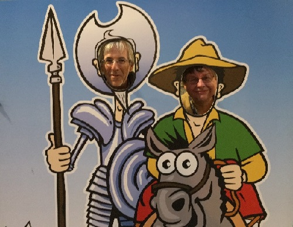
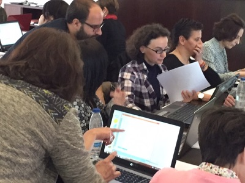
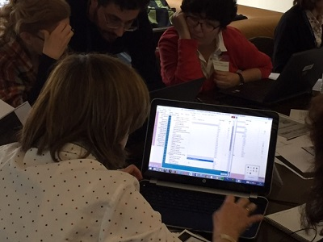
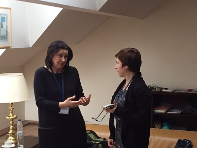
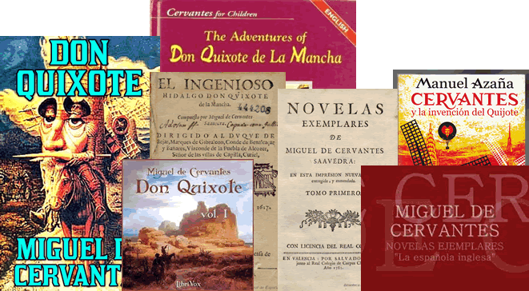

Cervathon
The first Cervathon will take place on 14 April 2016 at the National Library of Spain, Madrid, Spain.
The aim is to build upon the Miguel de Cervantes Saavedra base r-ball.
- Preparation
- Outline
- Team
- Scope
- Table topics
- Links to Cervantes resources
- Announcements, blogs, etc.
- Photos
Preparation
- 23 Feb 2016 (4-6 pm Spain): RIMMF training webinar for Coaches and Team Leaders (12 participants)
- 31 Mar 2016 (3-5 pm Spain): RIMMF training webinar for registrants (40 anticipated)
Outline
14 April 2016
- 8:30-9:00 Registration
- 9:00-9:20 Introductions, Outline of the Day, and Setup
- 9:20-9:45 Brief review of RIMMF functionality
- 9:45-12:45 RIMMF resources (includes morning break
- 12:45-1:00 Break
- 1:00-2:00 Discussion
- 2:00-2:05 National Library of Spain Director Welcome Speech
- 2:05-2:15 Gather r-balls
- 2:15-2:30 Next steps
- 2:30-3:30 Lunch
- 3:30-5:00 Presentation: RSC Strategy and RDA Internationalization (Gordon Dunsire, Chair of RDA Steering Committee
Team
- Directors
- Gordon Dunsire
- Deborah Fritz
- Richard Fritz
- Coaches
- María Jesús Morillo
- Pilar Tejero
- Ricardo Santos
- Roberto Gómez
- Team Leaders
- Eva Molleja
- Adelaida Caro
- Lourdes Alonso
- Mario Cottereau
- Lola Rodríguez
- Teresa Delgado
- Elena García-Puente
Scope
- The works of Miguel de Cervantes, as well as biographical and critical works about Cervantes and his works.
- in single or multiple expressions (e.g., editions, languages, with illustrations or without, with notes or reader's guides or without, etc.)
- with type of content:
- text
- spoken word
- Carried:
- in unmediated volumes
- in audio discs, cassettes, or online
- in computer discs, or online resources
Table topics
Attendees will work distributed between seven tables. Each table will focus on a different kind of document:
- Cervantes' individual work (Don Quijote or Don Quijote Part One or Don Quijote Part Two) in Spanish, without supplementary content: print books or ebooks
- Cervantes' individual work (Don Quijote or Don Quijote Part One or Don Quijote Part Two) in Spanish, with supplementary content: print books or ebooks
- Cervantes' individual work (La numancia) in Spanish, with or without supplementary content: print books or ebooks
- Cervantes' compilation work (Novelas ejemplares) in Spanish, with or without supplementary content: print books or ebooks
- Cervantes' works in translation, with or without supplementary content: print books or ebooks
- Critical and biographical works about Cervantes and his works: print books, ebooks and audiobooks
- Cervantes' works in Spanish or in translation: audiobooks
Links to Cervantes resources
- Miguel de Cervantes in Wikipedia
- Miguel de Cervantes in datos.bne.es
- Editions of Don Quixote held by the National Library of Spain
Announcements, blogs, etc.
- Announcement: Jornadas de RDA en la BNE
- Twitter: #CervathonBNE
- Presentation: RDA & Rare Materials at the Spanish National Library / Adelaida Caro Martín
Photos

{kind=link}
The Don and Sancho get ready to RIMMF.

{kind=link}
Looking for expressions.

{kind=link}
Finding the work.

{kind=link}
Well, it looked like a windmill!
